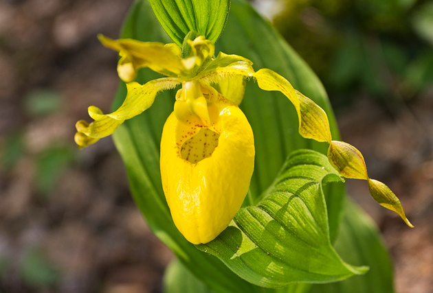

Skip to Content
Door County Wildflowers
Home
Spring
Summer
Summer Flowers
Yellow Lady Slipper facts
4-24 inches tall
perennial
native plant
grows in wet, shaded decidous woods, swamps, and bogs
an orchid
offcial flower of Door County
